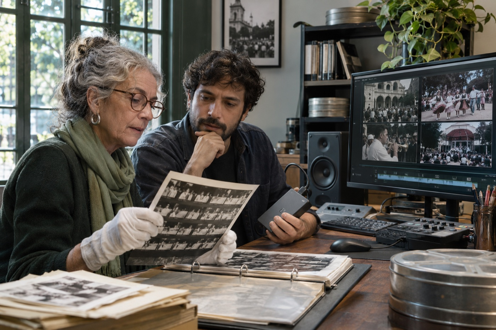

Conservación del archivo y producción creativa. Con el apoyo de Rushes + StoryTown.

La memoria institucional cobra vida.
Su archivo. Su equipo. Su próxima historia.
Preservar la memoria institucionalAprovechar los recursos existentesAmpliar las posibilidades creativas del equipo
DOS CAPACIDADES. UN MISMO DEPARTAMENTO.
Proteger el pasado. Crear lo que viene.
Años de grabaciones constituyen un patrimonio institucional. Las nuevas necesidades de comunicación abren oportunidades. Reunimos la gestión del archivo y el desarrollo creativo en una propuesta de servicios práctica.
RushesCONSERVACIÓN DEL ARCHIVO
Todo lo que han grabado. Útil de nuevo.
Organice, encuentre y reutilice grabaciones en el almacenamiento que controla su organización. Refuerce su conservación con copias verificadas y revisiones periódicas del archivo.
Localice imágenes y fragmentos de entrevistas relevantes.
Reúna material para el equipo de edición.
Incorpore el cuidado del archivo al trabajo diario.
Valor institucional Proteger la inversión en lo que ya existe.
StoryTownDESARROLLO CREATIVO
Todo lo que podrían crear. Bajo la dirección de su equipo.
Desarrolle ideas, planifique escenas y explore nuevos materiales audiovisuales con IA generativa, bajo la dirección creativa de profesionales.
Explore conceptos antes de comprometer recursos.
Desarrolle propuestas visuales para un encargo aprobado.
Mantenga el criterio editorial en manos de sus profesionales.
Valor institucional Ofrecer más posibilidades creativas al equipo actual.
DEL SITIO WEB DE RUSHES
Ver el archivo. Encontrar la historia.
Una introducción visual a la organización y búsqueda de material de producción. Sus profesionales aportan el contexto que convierte una colección de archivos en un recurso institucional útil.
Estas herramientas refuerzan el departamento audiovisual existente. Su personal selecciona el material, dirige el trabajo creativo y aprueba cada resultado final. El piloto incluye tiempo para aprender y evaluar juntos.
CREACIÓN DIRIGIDA POR PERSONAS
La tecnología abre posibilidades. Su equipo les da sentido.
Desde una imagen del archivo hasta una nueva propuesta visual, las decisiones creativas corresponden a quienes conocen su institución.
EN LA PRÁCTICA
El archivo de una ciudad. Una nueva historia para compartir.
Caso ilustrativo · flujo de trabajo propuesto
Un departamento de comunicación necesita un cortometraje sobre la vida cultural de la ciudad. Su archivo ya contiene años de entrevistas, actos públicos y grabaciones de los barrios.
La oportunidad: convertir esa memoria institucional en una nueva producción, con el personal del propio departamento al frente.
Encontrar el material
Utilice Rushes para localizar grabaciones y entrevistas relevantes, y reúna una selección para el editor.
Desarrollar la historia
Utilice StoryTown para explorar un tratamiento narrativo y propuestas visuales, con el equipo dirigiendo todo uso de IA generativa.
Entregar con confianza
El equipo audiovisual edita la película, comprueba los derechos y la exactitud de la información, y la presenta al proceso de aprobación de la institución.
Escenario propuesto para evaluar en un piloto. No representa un proyecto realizado para un cliente ni una integración automática entre aplicaciones.
VALOR CLARO PARA LA INSTITUCIÓN
Más valor con los recursos que ya tiene.
Continuidad
Mantenga accesible el conocimiento institucional aunque cambien los proyectos, las prioridades o el personal.
Menos trabajo repetido
Ayude al personal a reutilizar grabaciones existentes y a dedicar menos esfuerzo a buscar o recrear material.
Capacidad creativa
Ofrezca a los profesionales audiovisuales más formas de desarrollar una idea y responder a nuevos encargos.
Adopción responsable
Evalúe la utilidad práctica, la experiencia del personal y las condiciones de uso antes de ampliar el compromiso.
EMPEZAR CON UN ALCANCE ACOTADO. EVALUAR JUNTOS.
Un departamento. Una muestra del archivo. Un proyecto real.
Comience con una demostración concreta y un piloto cuyo alcance se defina conjuntamente. Reúna a la persona responsable de la decisión, al profesional audiovisual sénior y a los responsables de informática y gestión de la información.
Acordar los objetivos antes de empezar.
Alcance
Una muestra seleccionada del archivo y un encargo de producción útil.
Acompañamiento
Configuración guiada, formación inicial del personal y evaluación conjunta.
Evaluación
Tiempo de búsqueda, material reutilizable localizado, calidad de producción y opinión del personal.
Decisión
Revisar resultados, costes e idoneidad antes de ampliar el uso.
Ambas herramientas están en evolución. Durante la definición del alcance se deben evaluar la compatibilidad, los controles de acceso, los derechos y cualquier procesamiento externo de IA. El enfoque local del archivo de Rushes no implica que StoryTown procese la información de la misma manera.
Guía para conversar sobre el piloto
Utilice estas preguntas para iniciar una conversación en el departamento. Esta vista previa no envía ni recopila información.
¿Qué colección del archivo sería más útil hacer accesible?
¿Qué próxima película o campaña permitiría realizar una prueba práctica?
¿Quién dirigirá el piloto y aprobará el material, los derechos y el uso de IA?